第3章 动手接触硬件
Making Embedded Systems — Elecia White 著 | AI 辅助翻译
动手操作硬件
开始从事嵌入式系统的工作可能很困难。大多数软件工程师需要电气工程的速成课程，而大多数电气工程师需要软件设计的速成课程。与一位来自另一学科的成员紧密合作，将使进入嵌入式系统领域变得容易得多。我最好的朋友中就有一些是电气工程师。 如果你从未经历过包含硬件的开发周期，要直觉地把握自己的角色和职责可能会有些令人畏惧。在本章中，我将首先概述一个项目通常的流程。然后，我将就你需要掌握的技能给出更详细的建议，以胜任你在团队中的职责，包括： • 阅读数据手册 • 熟悉一款新处理器 • 解读原理图 • 创建你自己的调试工具箱 • 测试硬件（和软件）
硬件/软件集成
产品始于一个想法或一个需要被满足的需求。有人基于功能、成本和上市时间做出高层的产品设计。此时，通常会创建一个时间表来展示主要的里程碑和活动（见图3-1）。
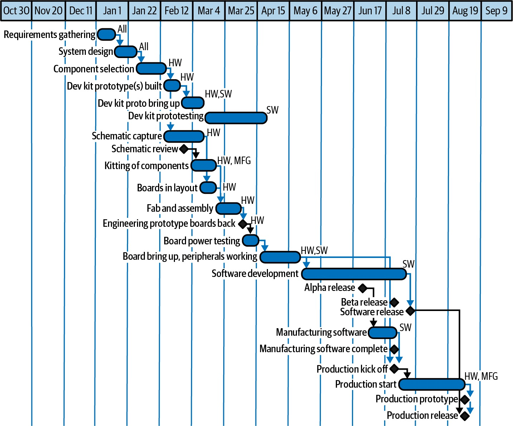
图 3-1 — 理想的项目时间表示例
理想的项目流程
这种时间表是基于工程经理（或技术负责人）讨论目标，然后估算项目所需的时间和资源而制定的。这只是时间表的一部分；它不包括机械工程、服务器端软件、市场发布或许多其他活动。但另一方面，这可能是时间表中包含了硬件和嵌入式软件的那部分，因此它很可能展示了你和你直属团队的工作。图3-1中的时间表展示了一种瀑布式开发模式，即一项活动接着另一项活动顺流而下。在电路板被制造出来之前进行原理图审查是有道理的。当然，电路板是在嵌入式软件开发达到alpha版本之前被制造出来的。
但这不会成为实际的时间表。
第3章：动手操作硬件
14周内完成，对吗？嗯，不对：软件很可能需要更多时间来配合已经完成的电路板。但希望整个项目不需要26周（12 + 14）。 制定时间表的很大一部分工作是确定哪些任务可以并行完成，哪些必须在硬件完成之后进行。人们往往过于关注最终日期，即那个至关重要的发货日期，但时间表中还有更多信息：依赖关系、人力资源需求，以及何时需要花费现金（薪资除外）。 当然，无论你做多少计划和安排，事情永远不会完全按计划进行。会有超支和返工。规划的意义在于帮助你找出哪些地方需要小心，哪些依赖关系在长期内是重要的（哪些不重要）。 可悲的是，嵌入式软件通常排在最后，试图弥补因需求变更或硬件修复而造成的延迟。你在不完整的硬件上开发，使用原型电路板，并且会做好良好的启动测试，以便在电路板最终到达时做好准备。 你可能使用敏捷方法而不是瀑布方法进行开发，允许更多、更快的发布。但在某种程度上，当创建物理的、可交付的产品时，你可能需要审视固件所依赖的各个部分，以及它们是如何被开发出来的。
硬件设计
一旦确定了要构建什么，硬件团队就会翻阅数据手册和参考设计来选择元器件，理想情况下会咨询嵌入式软件团队。通常会针对系统中风险最高的部分购买开发套件，通常是处理器和最不熟悉的外设（稍后会详细介绍处理器和外设）。 硬件团队创建原理图，而软件团队则在开发板上工作。看起来硬件团队可能花几周（或几个月）来画一张图，但这些时间大部分都花在翻阅数据手册上，以找到一个能在产品中完成所需功能的元器件——价格合适、物理尺寸正确、温度范围良好等等。在此期间，嵌入式软件团队正在寻找（或构建）包含编译器和调试器的工具链，创建调试子系统，试用一些外设，并可能构建一个用于测试算法的沙箱。 原理图使用原理图捕获程序（即CAD软件包）进行输入。这些程序通常授权费用昂贵且使用不便，因此硬件工程师通常会在检查点或审查时生成PDF原理图供你使用。虽然你应该花时间审查整个原理图（在"解读原理图"一节中，第58页会描述），但对你影响最大的部分是 处理器及其对系统的视角。因为硬件工程师理解这一点，所以大多数人会生成一个I/O映射表，描述连接到处理器每个引脚的连接。（第4章建议利用I/O映射表来制作一个头文件。） 原理图展示了电气连接，但它并没有明确指定哪些元器件需要安装在电路板上。它可能显示一个有十个引脚的排针，但为了组装电路板，制造商需要确切知道是哪种排针，通常需要附带一份详细说明一切的数据手册的链接。所有元器件都在物料清单（BOM）上，这是在原理图捕获阶段就开始编制的内容。 一旦原理图完成（并且开发套件已经表明处理器和高风险外设大概率是合适的），就可以进行电路板布局了。在布局中，原理图上的连接被绘制成电路板上的物理走线，将每个元器件按原理图中的方式连接起来。 电路板布局通常是一项专业技能，与电气工程不同， 所以如果你的硬件工程师以外的人来做电路板布局， 不要感到惊讶。 布局完成后，电路板进入制造环节，即印制电路板（PCB）被生产出来。然后它们被组装上所有的元器件。收集BOM上的物料以便开始组装的过程称为配单。获取交期长的元器件可能会使配单变得困难，从而延迟组装。组装好的电路板称为PCBA（印制电路板组件），或者简称为PCA，这就是会放在你桌上的东西。 当原理图完成，布局已经开始时，嵌入式软件团队的首要任务是定义硬件测试并在电路板制造期间编写好这些测试。研究面向用户的代码看起来可能更有成效，但当你从制造厂拿回电路板时，在完成启动之前，你无法推进软件的进展。硬件测试不仅能让启动过程更加顺畅，还能使系统在开发（和生产）过程中更加稳定。在编写硬件测试时，询问你的电气工程师哪些部分风险最高。优先为这些子系统开发测试（如果可以的话，在开发套件上先试一试）。 当电路板回来后，硬件工程师会上电验证是否存在电源问题，可能还会验证其他纯硬件子系统。然后你拿到一块电路板（终于！），启动工作开始了。
电路板启动
这可能是一段有趣的时光，是你向一位技能与你不同的工程师学习的过程。或者也可能是一场互相指责对方无能和不怀好意的吵架。全看你自己怎么选择。 你收到的电路板可能有bug，也可能没有。电气工程师没有机会编译他们的代码、试运行、做出修改然后重新编译。制造电路板不是一个有很多迭代的过程。记住，人人都会犯错，而且错误越愚蠢，越可能要花上漫长的时间才能找到并修复（你曾为最终发现是一个拼写错误的bug而调试了多少个小时？）。 不过，不要害怕提问，也不要害怕请求帮助找到你的问题（对，就这样措辞）。一位电气工程师坐在你旁边或许正是你所需要的，让你看清出了什么问题。 在设计早期阶段发现硬件（或软件）bug就像收到一份礼物。越早发现bug，你就越高兴。你们产品团队的bug也会反映在你身上，所以要愿意花时间和编码技能来解开一个难题。这不仅仅是礼貌和专业的问题；它是作为团队一员的必要组成部分。如果因为地理或组织上的分隔，获得硬件工程师的帮助需要跨越重重障碍，可以考虑一些非正式沟通渠道（并用午餐来交换）。这可能让你短期内钱包受损，但你会因为把事情做成而成为英雄，长远来看前景会很好。 当有人指出一个bug时，不要感到尴尬；要心怀感激。 如果那个人是你的团队成员或公司里的人， 这个bug就不会流出到现场被客户看到。 为了让启动过程对你和你的硬件工程师都更容易，首先要让每个组件都能独立测试。如果你没有足够的代码空间，就为硬件测试代码创建另一个软件子项目（但要尽可能共享底层的模块）。 其次，当你拿到PCBA时，从最低层的部分开始，以尽可能小的步骤进行。例如，不要直接尝试你那花哨的电机控制软件。而是设置一个I/O设备短暂开启，接上一个LED来确认它闪烁。然后（仍然一步一步来），做最少必要的工作来确保电机能够转动（或者至少能抖动一下）。 最后，让你的工具独立于你本人在场运行，这样其他人也能够复现问题。一旦问题可以复现，即使原因还不确定，就可以尝试修复。（有时候，修复本身就会揭示原因。）花在 编写良好测试上的时间将带来回报。这些硬件验证代码很有可能留存一段时间，而且当下一批电路板回来时，你很可能还会需要它们。此外，这些测试往往会演变成生产过程中用于检查电路板功能的制造测试。 你怎么知道需要编写哪些测试呢？这始于对处理器和外设的深入了解。这就引出了阅读数据手册的主题。
阅读数据手册
在产品发布的压力下，要放慢速度足够来阅读元器件的数据手册、手册和应用笔记，可能非常困难。更糟糕的是，你可能感觉自己读过了（因为你翻完了所有页），但什么也没记住，因为它像一门外语。当代码不工作时，你很容易抱怨硬件坏了。 如果你是一名软件工程师，可以把每个芯片看作一个独立的软件库。想想你需要花多少精力来学习一个软件包（Qt、OpenCV、Zephyr、Unity、TensorFlow等）。熟悉你的处理器及其外设所需的时间大概就是那么长。处理器甚至有与外设通信的方法，有些类似于应用程序接口。和软件库一样，你常常只读文档的一个子集就能应付——但你最好在陷入困境之前知道哪个子集对你最重要。 数据手册就是外设的API手册。在我告诉你哪些内容需要读两遍、哪些内容在需要之前可以忽略的秘密之前，请确保你拥有最新版本的数据手册（查看制造商的网站，并在线搜索以确保）。
不幸的是，一些制造商仅以保密协议（NDA）
方式发布数据手册，因此他们的网站上只有产品的概述或摘要。 硬件元器件通过数据手册来描述。数据手册可能令人生畏；它们密集地塞满了信息。阅读数据手册是一门艺术，需要经验和耐心。关于数据手册，首先要了解的是，它们并不是真正为你而写的。它们是写给电气工程师看的，更准确地说，是写给已经熟悉该元器件或其近亲的电气工程师看的。 在某种程度上，阅读数据手册就像是在一场技术对话的中途加入。请看图3-2，它类似于一份真实的数据手册，尽管它不是一个你可能在软件中接口的元器件（它是一种用于腿式执行器的史前步态控制器）。 每份数据手册的顶部附近都有一个概述或功能列表。这是芯片的摘要，但如果你以前没有使用过数据手册中有85%内容与此相同的元器件，概述不太可能很有帮助。另一方面，一旦你用过三四个模拟三角龙（或加速度计，或你真正在看的东西），你就可以只读下一个的概述，就能了解到这个芯片与你之前的经验相比有哪些相同和不同之处。如果数据手册要花篇幅解释新手可能想知道的每一个细节，那么每本都会是一本书（而且大多数会有相同的信息）。此外，批量购买元器件的并不是新手；而是已经熟悉这些器件的经验丰富的工程师。

图 3-2 — Dino Industries的模拟三角龙数据手册顶部
所以我说跳过概述标题（或者至少稍后再回来看）。 我喜欢通常出现在第一页的功能框图，但它们和概述很像。如果你不知道自己在找什么，框图大概也不会让你豁然开朗。所以应该从描述部分开始。这通常覆盖了第一页大约一半的内容，可能会稍微延伸到第二页。 描述部分不是读几个词就跳到下一段的地方。这段文字很密集，可能不到一页。请仔细阅读这一节。大声读出来，划出重要信息（可能大部分都是重要信息），或者尝试向别人解释它（我办公室有一只泰迪熊专门用于这个目的，不过也有人用他们的电气工程师）。
出问题时你需要的数据手册章节
在第一页之后，每份数据手册中信息的顺序各不相同。而且并非所有数据手册都有所有章节。不过，你不需要仔细查看那些对你的软件没有帮助的章节。跳过绝对最大额定值、推荐工作条件、电气特性、封装信息、布局和机械方面的考量，以节省时间和精力。硬件团队已经看过数据手册中那些部分了；相信他们能做好自己的工作。 虽然你现在可以跳过以下章节，但要记住这些章节是存在的。当事情出问题时，当你不得不拿出示波器来搞清楚为什么驱动程序不工作，或者（更糟的是）当元器件似乎在工作但没有按宣传的那样工作时，你可能会需要它们。请注意这些章节的存在，但可以在需要时再回来看；在第一遍阅读时放心地忽略它们。
每种可用封装的引脚分布
如果你在调试期间需要探测芯片，就需要了解引脚分布。理想情况下，这不会是重要的，因为你的软件会正常工作，你不需要探测芯片。 引脚配置中有些引脚名称带有上划线（图3-3）。

图 3-3 — 模拟三角龙引脚分布
上划线表示这些引脚是低电平有效，也就是说当电压为低时它们是开启的。在引脚描述中，低电平有效的引脚在名称前有一个斜杠。你还可能看到其他表示低电平有效信号的方式。如果你大多数引脚的名称格式为NAME，那么留意一下使名称变成nNAME、#NAME、_NAME、 NAME*、NAME_N等格式的修饰符。基本上，如果名称附近有修饰符，请查看它是否是低电平有效，这应该在引脚描述部分有说明。 如果这对你来说完全是新知识，可以考虑找一本电子学入门指南，例如"延伸阅读"（第84页）中列出的那些书。
引脚描述
这是一个类似图3-4的表格。当你需要这些信息时再回来看，可能是在查看线路是否应为低电平有效，或者是在你试图让示波器显示与数据手册中时序图相同的图像时。

图 3-4 — 模拟三角龙引脚描述
性能特性
这些表格和图形精确描述了元器件的行为，对于你的第一次阅读来说信息过于详细。然而，当你的元器件能够通信但不能正常工作时，性能特性可以帮助你判断是否存在某种原因（例如，该元器件的额定工作温度范围是0°C–70°C，但它正好位于你那个非常热的处理器旁边；或者外设在输入电压刚好合适时工作正常，但当输入稍微超出指定范围时精度就会下降）。
示例原理图
有时你拿到了驱动程序代码，它能按你的需要工作，你最终没有做太多改动，甚至完全没改。示例原理图就是驱动程序代码的电气工程版本。当你的元器件出问题时，看到示例原理图与你的原理图相似会令人放心。然而，和供应商提供的驱动程序代码一样，实际实现与示例实现不匹配有很多充分的原因。如果你在使用一个元器件时遇到麻烦，而原理图又不匹配，询问你的电气工程师关于这些差异的原因。可能没什么大不了的，但也可能很重要。
软件开发人员需要的数据手册章节
最终，可能在数据手册的中间部分，你会看到一些文本（图3-5）。这部分可能标题为"应用信息"或"工作原理"。或者数据手册直接从表格和图形切换到了文字和图表。这是你需要开始阅读的部分。先快速浏览以确定所需信息的位置是可以的，但最终你真的需要从头到尾仔细阅读。作为额外收获，这里的文字可能会链接到有价值的应用笔记和用户手册。通读数据手册，思考你将如何在你的系统中实现该驱动程序。它如何通信？它如何需要被初始化？你的软件需要做什么才能有效地使用该元器件？是否有严格的时序要求，你的处理器如何处理它们？
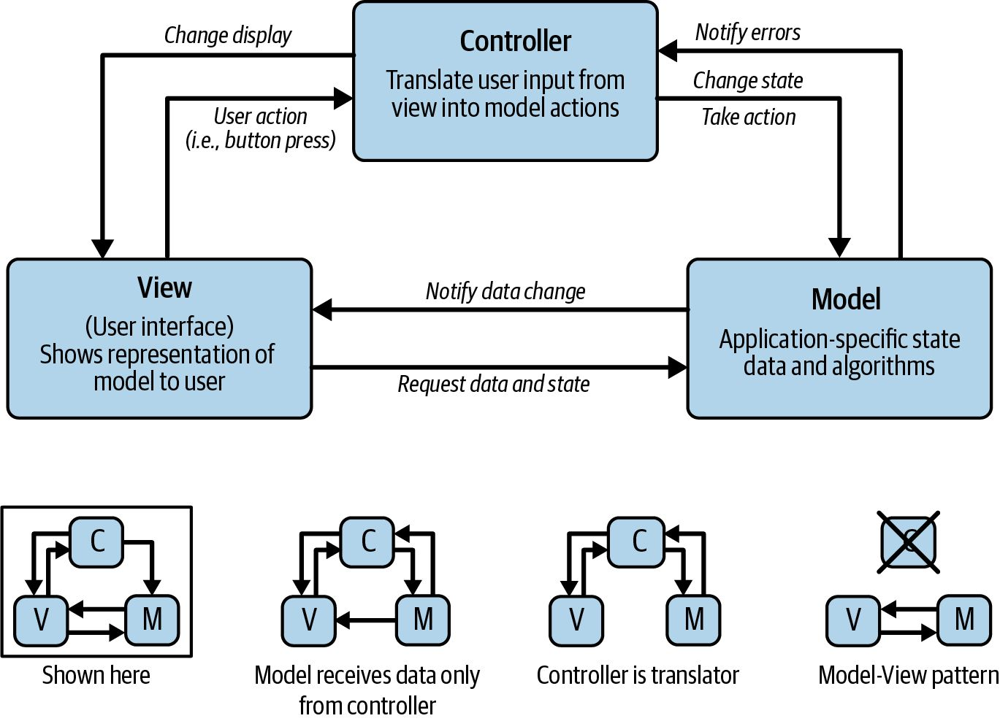
图 3-5 — 模拟三角龙工作原理
在阅读数据手册时，标记可能对你的代码产生影响的区域，以便之后返回查看。时序图是停下来喘口气的好地方（图3-6）。尝试将这些图与文字以及你打算的实现方式联系起来。关于时序图的更多信息，请参见侧边栏"时序图如何帮助软件开发人员"（第52页）。 除了确保你拥有元器件的最新数据手册外，还要查看制造商的网页，寻找勘误表，其中提供对数据手册中任何错误的更正。用元器件型号和"errata"这个词搜索网页（图3-7）。勘误表可能指数据手册中的错误，也可能指元器件本身的错误。大多数元器件都有某种形式的勘误表。 数据手册可能有修订版本，元器件也可能有修订版本。 请获取你正在使用的元器件版本所对应的最新数据手册。
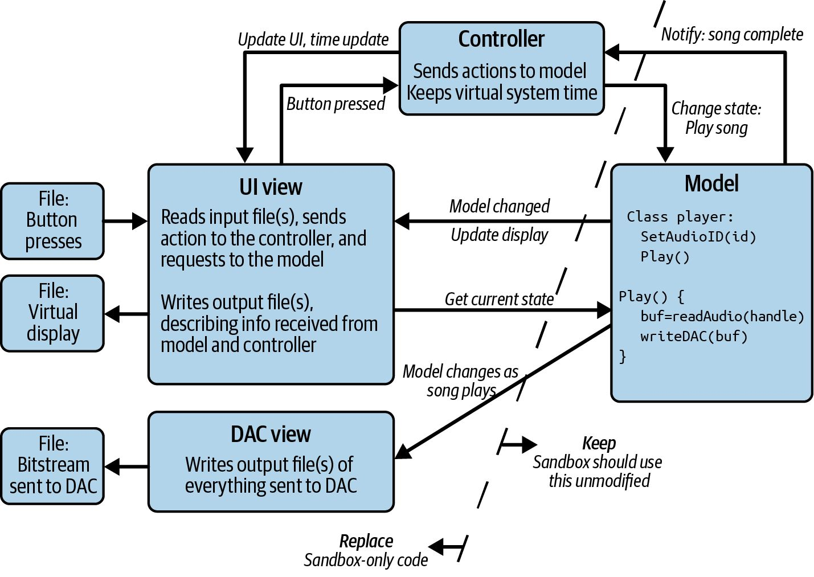
图 3-6 — 模拟三角龙时序图
当你读完时，如果你非常擅长或者非常幸运，你将获得使用该芯片所需的信息。一般来说，大多数人会开始为芯片编写驱动程序，并在编写与芯片的接口、通信方法，然后最终实际使用芯片的过程中，花时间反复阅读相关部分。阅读数据手册是一场乌龟肯定能赢过兔子的比赛。 一旦你完成了驱动程序并且它正常工作了，再通读一下数据手册顶部的功能摘要，因为现在你已经征服了这种类型的元器件，能够更好地理解摘要。即便如此，当你实现类似的东西时，你可能仍然需要阅读数据手册的部分内容，但这会更简单，你也会从数据手册第一页的摘要中获得更好的概览。
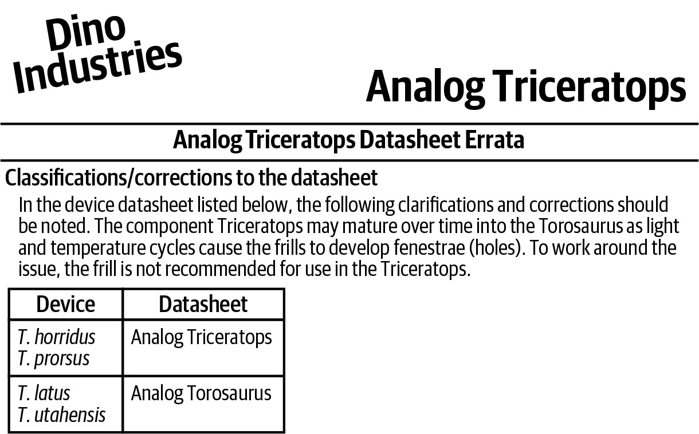
图 3-7 — 模拟三角龙勘误表
在使用外设时，可能还有其他可用的资源：
• 如果芯片有用户手册，一定要看一下。 • 应用笔记通常包含你可能感兴趣的特定用例。这些通常附带有供应商的示例代码。同时寻找供应商的代码仓库。 • 在GitHub或网上搜索该元器件。其他人使用该元器件的示例代码可以向你展示应该怎么做。 在深入之前先环顾四周；你不知道的事情的答案可能就在那里。
时序图如何帮助软件开发人员
时序图展示转换之间的关系。有些转换可能发生在同一信号上，或者时序图可能展示不同信号上转换之间的关系。例如，图3-6顶部正常模式下双手（HND1和HND2）的交替状态显示一只手在另一只放下后不久抬起。在查看时序图时，从左侧的信号名称开始。时间从左向右推进。 大多数时序图关注数字状态，向你展示信号何时为高或低（记得检查名称中是否有表示低电平有效信号的修饰符）。有些图包含斜坡（如图3-6启动序列中的手和脚），以向你展示信号何时处于过渡状态。你还可能看到 既高又低的信号（如图3-6启动序列中的喇叭）；这表示信号处于不确定的逻辑状态（对于输出）或者未被监控（对于输入）。 重要的时间特性用带箭头的线突出显示。这些通常在表格中有详细说明。同时留意信号排序的指示（通常用虚线显示）和因果关系（通常是从一个信号指向另一个信号的箭头）。最后，图中的脚注通常包含关键信息。
使用数据手册评估元器件
在实现之后才讨论评估元器件这一节似乎有些奇怪。这不是项目中的做法。然而，这确实是工程生涯中的路径。一般来说，在你到达能够选择系统组件的阶段之前，你必须先通过实现由他人设计的系统部件来积累经验。因此，评估元器件是比阅读数据手册更进阶的技能，是电气工程师通常比软件工程师先掌握的技能。 当你评估一个元器件时，你的目标是快速排除那些不能用的元器件。如果一个元器件需要120V交流电而你的系统只有5V直流电，那就不要浪费宝贵的时间去精确确定它如何实现某个功能X——因为它根本用不了。从一个必须满足的需求列表和一个期望满足的需求列表开始。然后你需要生成一个需要进一步调查的潜在元器件池。 在你深入调查之前，让我们先谈谈数据手册中没有的东西。它们通常没有价格，因为价格取决于许多因素，特别是你计划订购多少。而且数据手册没有交期信息，所以要小心围绕完美的元器件进行设计；它可能要等六个月才能到货。除非你是在线订购，否则你需要与你的供应商或分销商沟通。 与供应商沟通是一个很好的机会，可以询问他们是否有使用该元器件的指导、初始化代码、应用笔记、白皮书、论坛，或任何可能让你更进一步的东西。供应商认识到这些可以成为卖点，他们的应用工程师通常愿意提供帮助。分销商甚至可能帮助你比较和对比你可用的不同选项。 即使与分销商合作，DigiKey通常是了解价格和交期大致情况的好方法。 回到数据手册。一些之前跳过的信息密集的章节现在变得重要了。从绝对最大额定值和电气特性开始（见图3-8）。如果它们不匹配（或不超过）你的标准，就把这份数据手册放在一边。当前的目标是快速翻阅一堆数据手册；如果某个元器件不满足你的基本标准，记下它哪里不满足然后继续。（做笔记是有用的；否则你可能会反复拒绝同一份数据手册。）你可能想按照偏离范围的程度来对数据手册进行优先级排序。如果你最终没有找到任何符合你高标准的数据库手册，可以重新检查最接近的几份，看看它们是否有可能被调整到可用。 一旦基本的电气和机械需求得到满足，下一步是考虑典型特性，判断该元器件是否是你需要的。我无法在具体细节上给你太多帮助，因为这取决于你系统的需求和特定的元器件。这个层面上的一些常见问题关于你的功能参数：元器件运行速度是否足够快？输出是否达到或超过你系统的要求？对于传感器，噪声是否可接受？

图 3-8 — 模拟三角龙绝对最大额定值
一旦你有两三份通过了第一轮筛选的数据手册，就更深入地研究它们。如果有应用部分，那是一个开始的好地方。这些应用中有没有与你的类似的？如果有，继续。如果没有，就要有些担心了。第一个以特定方式使用某个外设可能没什么问题，但如果该元器件特别针对水下传感器网络，而你想把它用在你那超级智能烤面包机里，你可能需要弄清楚为什么他们把应用范围定义得如此狭窄。更严肃地说，建议的应用没有覆盖所有用途可能有其原因。例如，针对汽车用途的芯片可能无法小批量购买。数据手册的目标是把东西卖给已经在使用类似东西的人，所以范围有限可能是有充分原因的。 接下来，查看性能特性，判断它们是否满足你的需求。在阅读这一部分时，你常常会发现新的需求，例如意识到你的系统应该具有A元器件的温度响应、B元器件的电源响应和C元器件的抗噪声能力。把这些收集到标准中，剔除那些不满足你需求的（但也要对标准进行优先级排序，免得把自己逼入绝境）。 此时，你应该每个元器件至少有两份但不超过四份数据手册。如果超过四份，问问周围的人，看是否某个供应商在你们采购部门有更好的声誉、更短的交期或更好的价格。你可能需要回过头来用到备选的，但先选出四个看起来不错的。 如果你已经排除了所有的数据手册，或者只剩下一份，不要就此止步。这并不意味着所有元器件都不可用（或者只有一个可用）。相反，这可能意味着你的标准太严格了，你需要更多地了解你可用的选项。所以选择两个最好的元器件，即使其中一个或两个都未通过你最严格的标准。 对于剩下的每份数据手册，你需要弄清楚实现中的棘手部分，看看该元器件在你的系统中表现会如何。这就是处理类似元器件的一些经验派上用场的地方。你要像将要实现代码一样阅读数据手册。事实上，如果你没有足够类似的经验，你可能需要敲一些代码来把它具体化。如果你能用实际硬件对元器件进行原型验证，那太好了！如果不能，你仍然可以进行心理原型，在脑海中一步步走完实现过程，预估会发生什么。 尽管你将对两到四个元器件这样做，最终可能只会使用其中一个，但这将让你在元器件最终被选定后，在编写代码时领先一步。如此深入的分析需要大量时间，但能降低元器件不工作的风险。你把原型做到什么程度取决于你（和你的时间表）。 如果你仍有多个选择，看看该元器件的产品系列。如果你在某个方面（空间、引脚数量或范围）用到了极限，同一系列中是否有引脚兼容的元器件（理想情况下软件接口也相同）？留有扩展余量可能非常方便。 最后，在选定了元器件之后，功能摘要就是一项比较文献的练习了。既然你已经成为了那个已经读过好几份类似元器件数据手册的人，数据手册开头的概述就是为你而写的。如果你还有待评估的数据手册，就从那里开始。把你已经评估过的与新来的进行比较，快速了解每个芯片的功能以及不同参数之间的相互关系（例如，更快的速度很可能与更高的成本成正比）。
你的处理器是一门语言
最重要的元器件是你的软件运行所在的：你的处理器。一些供应商（ST、TI、Microchip、NXP等）使用共同的内核（如Arm Cortex-M4F）。各供应商提供不同的片上外设。你的代码与定时器或通信方法的接口方式会发生变化。共享同一个内核使得变化比从微小的8位处理器迁移到强大的64位处理器要容易一些，但你应该预期会有差异。 当你开始熟悉一款新处理器时，要预计这需要几乎与学习一门新编程语言同等的努力。而且，和学习语言一样，如果你已经使用过类似的东西，学习新的会更容易。随着你学习多门编程语言或多款处理器，你会发现学习新东西变得越来越容易。 尽管这个比喻让你对需要吸收的信息量有了概念，但处理器本身实际上更像一个带有奇特接口的大型库。与"硬件对话"这个说法并不准确。你的软件实际上是通过称为寄存器的特殊接口与处理器软件对话，我将在第4章中更详细地介绍寄存器。寄存器就像一门语言中的关键字。你通常先学会几个（if、else、while），然后稍后学会更多（enum、do、sizeof），最终成为专家（static、volatile、union）。 处理器的文档量与其复杂度成正比。你的首要目标是学习你完成任务所需的内容。面对海量的可用信息，你需要确定哪些文档值得你投入宝贵的时间和注意力。需要寻找的一些文档包括：
来自处理器供应商的用户手册（或用户指南、参考手册）
通常篇幅巨大，用户手册提供了你需要了解的大部分内容。阅读引言部分将帮助你了解处理器的能力（例如，它有多少个定时器及其基本存储结构）。 为什么要从供应商那里获取用户手册？以STM32F103处理器为例， 它使用Arm Cortex-M3内核。 如果你使用F103，就不需要阅读Arm用户手册， 因为Arm手册中88%的信息是多余的， 10%会在STM32F10x手册中， 最后百分之几你可能永远不需要。 这些手册通常是针对处理器系列编写的，因此如果你想使用STM32F103，你需要获取STM32F10x手册，并寻找区分不同处理器的注释。读完引言后，你可能 会想跳到与你的系统相关的部分。每一章通常在进入细枝末节之前，都有自己有用的引言。 用户手册将包含你使用该芯片所需的信息，但可能不会帮助你让系统启动并工作。
开发套件的入门指南或用户手册
开发套件（dev kit）通常是开始使用新处理器的起点。使用开发套件可以让你有信心在定制硬件到来之前设置好编译器和调试器（并且如果你的硬件不能立即工作，可以给你一个对比的参考）。开发套件通常是处理器的销售工具，所以价格不会太贵，并且往往有优秀的文档来指导从头开始设置系统。该套件推荐编译器、调试器和必要的硬件，甚至向你展示如何连接所有线缆。开发套件文档旨在成为面向程序员的方向指引，因此即使你不购买套件，相关的文档也可能帮助你了解处理器生态系统的方向。
入门指南（幻灯片）
这份文档描述了电气工程师和软件开发人员开始使用该处理器的步骤。虽然阅读起来很有趣也很快，但这份幻灯片通常不会回答关于如何使用处理器的问题。在评估处理器是否适合用于项目时，它可能会有所帮助，因为它确实讨论了处理器是什么以及常见的应用。此外，它可能让你了解有哪些可用的开发套件。
应用笔记（App Notes）
你想在你的系统中实现的那个复杂功能？很可能已经有人做过了。或者更好的是，供应商厌倦了回答关于如何实现它的相同问题，所以他们写了一篇描述。应用笔记就像开发中的作弊码。虽然用户手册会告诉你关于处理器的一切，但应用笔记通常更具战术性，描述了如何完成不同的目标。它们通常附带有相关的代码。
维基和论坛
虽然关于你的处理器的主要维基百科页面可能没有足够的信息来帮助你编写代码，但它可能给你一个高层次的概述（尽管通常用户手册的引言对你更有用）。维基百科页面可能有指向使用该处理器的论坛和社区的宝贵链接，在那里你可以搜索可能遇到的问题，并看看其他人是如何解决这些问题的。 供应商也可能有专门针对该处理器的维基页面或论坛。这些可以提供对用户手册或入门指南中信息的另一个视角，很有价值。它们通常便于搜索，并链接到大量示例。
供应商或分销商来访
参加这些活动。他们可能没有太多直接相关的信息，但在你日后请求代码或支持时，建立的人脉就会很有用。
处理器数据手册
你的处理器的数据手册通常更侧重于电气方面。既然你将编写软件，你需要更偏向软件的内容。因此，对于处理器，除非你在查阅电气规格，否则跳过datasheet，然后去查阅用户手册（user manual或user guide）。
勘误表
比极其密集的datasheet更难读的是勘误表，但你仍然需要浏览它，以了解芯片的哪些部分存在错误。例如，如果勘误表中提到了七个独立的I2C问题，那么如果你要用I2C，就知道需要深入调查了。 现在大多数处理器都附带了很多示例，包括大量的驱动代码。 有些代码很好，有些则不然。即使是那些不太好的代码，有个示例作为起点也是不错的。虽然这些示例通常能按描述工作，但它们可能不够健壮或高效，无法满足你的需求。如果你打算使用这些代码，那它就变成了你自己的代码，所以务必确保你理解了它。 一旦你熟悉了环境（最好有一个能正常运行的开发套件），就埋头研读用户手册，阅读你正在使用的每一个接口的章节（即使你的供应商已经提供了你需要的示例代码）。在我们逐步深入嵌入式系统的细节时，会更多地介绍用户手册各章节中应该关注的内容（输入和输出、中断、看门狗和通信等）。现在，让我们回到即将启动的系统的全局视图上来。
阅读原理图
如果你来自传统软件领域，原理图看起来就像布满象形文字的视力表，中间夹杂着奇怪的方框和缠绕的线条。和datasheet一样，知道从哪里开始可能让人望而生畏。从多页原理图的第一页开始看可能会很冒险，因为许多电子工程师把电源处理硬件放在那里，而这些东西你未必关心。图3-9展示了原理图某一页的片段。 有些原理图包含文字数据块（通常在页面角落）。那些是注释，要仔细阅读，特别是当注释块标题为"处理器I/O"或类似有用的内容时。这些就像代码中的块注释：它们不总是存在，所以当原理图注释做得很好时，你应该请你们的电子工程师吃顿饭。
第3章：动手接触硬件
图 3-9 — 原理图片段示例
大多数时候你会拿到一张硬件框图来帮助解读原理图。不过，我在好几次面试中被问到过："这个原理图是做什么的？"因此，本节将为你提供解读原理图的技巧，同时也介绍一个更友好的原理图。 当你第一次查看原理图时，先从有很多连接的方框开始。通常这可以进一步简化，因为原理图上方框的大小与连线数量成正比，所以先找最大的方框。你的处理器很可能是其中之一。因为处理器是软件世界的中心，找到它将帮助你找到你最关心的外设。 方框上方是元件标识（U1），通常印在PCB上。方框内部或下方通常是部件号。如图3-9所示，部件号可能不是你习惯看到的样子。例如，你的处理器手册可能写的是Atmel AT91R40008，但原理图上可能是AT91R40008-66AI，这要啰嗦得多。然而，原理图不仅描述了如何在印刷电路板上布线，还描述了如何使用正确的元件组装电路板。处理器后面额外的字母描述了处理器的封装方式以及如何连接到电路板上。 到现在你应该已经找到了两到四个最大和/或连接最多的元件。查看它们的部件号以确定它们实际上是什么。但愿你已经找到了你的处理器。（如果没有，继续找。）你可能也找到了一些存储器。存储器以前挂在地址总线上，所以它的连接几乎和处理器的连接一样多，通常有8条或更多的地址线和16条数据线，如图3-9所示。许多较新的处理器有足够的嵌入式内存，因此不需要外部RAM或flash，所以你可能在处理器之外找不到任何大型元件。 接下来，查看连接器，它们可能看起来像方框或长矩形。这些连接器用J而不是U来标记（例如J3）。应该有一个用于系统供电的连接器（至少两个引脚：电源和地）。可能还有一个用于调试处理器的连接器（图3-9中的J1）。其他连接器可以告诉你关于这块板子的很多信息；它们是外部世界看到这块板子的方式。是否有一个信号很多的连接器，可能表示有子板？是否有一个带RS-232信号的连接器，表示有串口？连接器上是否布满了以USB或LCD开头的网络标签（连线名称）？这些名称旨在给你一些提示。 在识别出连接器和较大的芯片之后，你可以开始在脑海中构建系统的模型了（如果你还没有硬件框图的话）。 现在回到那些方框，看看能否用名称来估计它们的功能。寻找诸如SENSOR或ADC之类的名称可能会有帮助。第7章会介绍一些其他信号名称，可能帮你找到有趣的外设。 在原理图中，导线可以交叉而不连接。注意看圆点来表示连接点已接通。原理图很少在四路交叉处画圆点，因为打印出来后很难判断那里是否有圆点。 一直以来，我们都在忽略那些非方框形状的元件。虽然理解电阻网络、模拟滤波器或运放电路是很有用的，但你不需要立刻掌握这些。图3-10展示了一些常见的原理图元件及其名称，不过在你的原理图中它们可能会画得稍有不同。这可以让你对某个特定电阻的功能表达好奇。第84页的"延伸阅读"为你提供了一些提升硬件知识的建议。
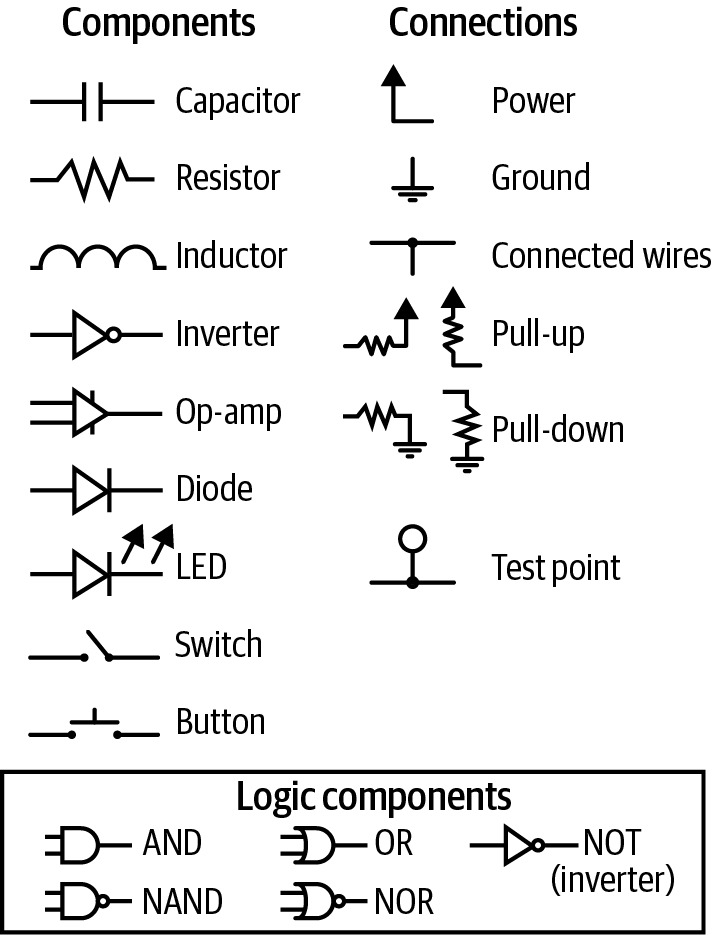
图 3-10 — 常见原理图元件
我对你忽略方框以外一切的建议有两个例外。第一，LED、开关和按钮通常连接到处理器。原理图会告诉你这类元件连接到了处理器的哪条线上，这样你就知道在哪里读取开关状态或点亮LED。 另一类需要关注的元件是连接到处理器和电源的电阻，称为上拉电阻，因为它们把电压拉高（朝向电源）。通常，上拉电阻相对较弱（电阻值高），这样处理器可以将被上拉的I/O线驱动为低电平。上拉电阻意味着当处理器不驱动时，该线上的信号 被定义为高电平。处理器可能有内部上拉电阻，这样即使输入未连接，处理器输入也有默认状态。注意也有下拉电阻，即接地的电阻。所有关于上拉的信息也适用于下拉，只是它们的默认逻辑电平是低而不是高。没有上拉或下拉的输入既不是逻辑高也不是逻辑低，所以它们是浮空的（也可以称为高阻态、高阻抗或三态）。 动手练习读原理图：Arduino！ Arduino是很棒的小板子，设计得易于使用，让艺术家、学生和所有人都能接触电子产品。对许多人来说，Arduino是通往嵌入式系统的门户；它是他们编程的第一块硬件。 我想向你展示如何把Arduino从一个不透明的系统看作一块有熟悉原理图的板子。
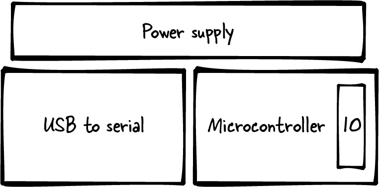
图 3-11 — Arduino硬件框图
微控制器左边是一个USB转UART（或USB转串口）方框，表示将计算机说的语言转换为微控制器能理解的语言的硬件。它用于给板子编程新代码以及在代码运行时打印输出数据。在大多数框图里，这个部分会是一个小方框；它是一个次要特性，有时只是线缆的一部分。不过，我在为原理图做铺垫，所以把它画得和它在原理图上占据的空间差不多大。 最后一个方框，在最上面，是电源子系统。Arduino板子有点特别，因为你可以把它插到USB上，也可以插到5V直流电源适配器上。想想你周围的电子设备（手机、鼠标、摄像头），通常只能是其中一种方式。但在这块板子上，你可以同时插入两种而不会损坏任何东西。由于这种灵活性，电源子系统更复杂一些。
| 第3章：动手接触硬件
看看图3-12。更好的是，打印一份你自己的副本，拿出一些彩色铅笔。
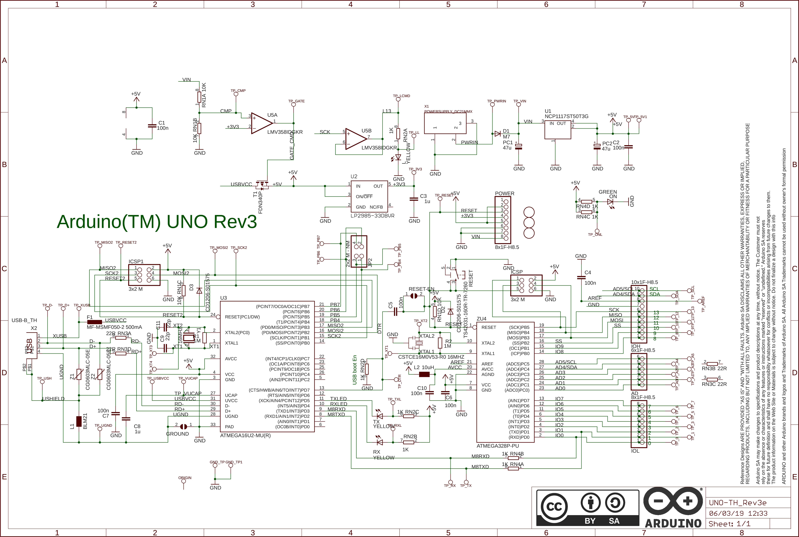
图 3-12 — Arduino原理图，取自https://content.arduino.cc/assets/UNOTH_Rev3e_sch.pdf
把硬件框图覆盖在原理图上画出来。微控制器在右下角，I/O引脚在最右边。然后有一些无源元件（我们不关心，所以跳过这些讨厌的符号）。在它们左边是USB转UART部分（再往左，是更多讨厌的无源元件以及X2上的USB连接器）。 顶部是电源子系统。找出标有POWER字样的连接器。它上面的所有东西都是与电源相关的。最终，你的彩铅图应该看起来像图3-11。 你在原理图上还能找到什么？ • 如果采用"越大的东西越有趣"的方法，我们会发现ATMEGA16U2-MU(R)和ATMEGA328P-PU是两个大芯片。从我给你的框图来看，ATMEGA328P-PU是用户的微控制器。另一个是USB转UART部分。 • 你能找到LED吗？不仅名称里包含颜色，还要找带箭头的三角形符号。这些在你们自己的原理图上会很有用。 动手练习读原理图：Arduino！ • 寻找ICSP和ICSP1（它们在芯片上方）。这些是制造时用来给板子编程的连接器。如果你有一块Arduino UNO板子，能找到这些连接器吗？它们与通用I/O连接器有什么不同？ 如果你花些时间去找ATMEGA328的datasheet，你会发现它有两页密集的、可能难以理解的总览信息。然后它会展示与板子上物理处理器相似的引脚描述。该datasheet有不同但相似的处理器之间的对比。它会讨论处理器的核心（AVRCore）。这是了解微控制器设计的一个有趣视角，但编译器会通过编程语言的魔力将大部分细节隐藏起来。 datasheet会包含关于存储器（Flash、RAM、EEPROM）的章节，然后是每个子系统和通信协议的章节。它包含了所有基本信息。 如果你一直跟着看，可能已经注意到Microchip是这个芯片的供应商。如果你在Microchip网站上找到这个处理器，会发现大量的文档和应用笔记，对这些内容进行了更深入的探讨（ADC基础、参考手册、勘误表等等）。供应商提供这些信息，是因为他们想销售自己的芯片。
保护好你的板子
datasheet、用户手册和原理图只是纸（或电子形式的纸）。现在来看看硬件。等等：在拿硬件之前，要知道触摸硬件可能会给它带来静电冲击从而损坏它（特别是当你在干燥的天气里刚脱掉羊毛外套之后）。 向你的硬件工程师要一些工具来保护你的板子。要注意你的板子放在什么上面（支架可以让板子远离可能洒上咖啡的表面！）。始终用附带的袋子携带它；这个袋子很可能是用防静电材料制成的，可以保护板子。防静电垫很便宜，可以迫使你在桌上划出一块区域专用于硬件（即使你不用防静电腕带，这仍然比把硬件压在掉落的书下面或把咖啡洒在上面要好）。 如果可能的话，当把任何导线加到板子上时，不仅要焊接，还要把它们粘牢。很多人都因为一根返修导线断了而浪费了好几个小时。同样的，如果连接器没有防呆设计（只能以一种方式插入），那就给板子拍张照片，或者记下插入连接器的正确方向。 我喜欢把硬件连接到一个我可以关掉的电源排插上（最好这个排插不连我的电脑）。有一个紧急全部关停的计划真的很好。而且要注意灭火器的位置，以防万一。 说真的，问题通常不是着火，而更像是冒出一小缕烟。不过，无论你怎么对待它，一块损坏的板子都不太可能帮你赢得朋友。当你的经理或硬件工程师问你想要分配多少块板子用于嵌入式软件开发时，总是多要一两块备用的。名义上这是为了让你能确保硬件测试在不止一块板子上都能通过。一旦系统开始蹒跚学步，你最有可能失去对板子的使用权，因为它会被拿去给别人展示。至少，这些才是你申请备用板子时应该给出的理由，而不是因为你很可能弄坏第一块（或两块）板子。 通常还存在制造错误，尤其在早期的高密度板设计中。裸PCB会进行连续性测试，但能做的也有限，特别是对于新设计，要测试焊点是否连接正确、没有断路和短路是很困难的。如果某样东西在一块硬件上不工作，手头有第二块来试试就非常有用，再加上第三块作为决胜裁判——如果你在两块板子上得到不同结果的话。
创建你自己的调试工具箱
我热爱我的工具箱，因为它让我在某种程度上独立于硬件工程师。工具箱就放在桌上，我可以用更安全的方式对板子做小改动（用尖嘴钳移动跳线比用手指更不容易损坏板子）。不算我多年来积累的各种跳线、RS-232转接头和半死不活的电池这些杂物，我的工具箱里有以下东西： • 尖嘴钳 • 镊子（一把当迷你钳子用，一把当镊子用） • 美工刀 • 数字万用表（稍后详述） • 电工胶带 • 剪线钳（或者更好的，剥线钳） • 记号笔 • 各种螺丝刀（或者一把带多个批头的） • 手电筒 • 放大镜 • 安全眼镜 • 束线带（魔术贴和扎带）
创建你自己的调试工具箱 |
如果你的公司有一个好的实验室，有人把工具放在标签区域，那就用那些（但还是要准备你自己的）。如果没有，去一趟五金店可能会省去未来的很多麻烦。
数字万用表
即使你选择不买一个更完整的工具箱，我强烈建议你买一个数字万用表（DMM）。 你可以买到覆盖基本功能的便宜款，大概相当于一顿好饭的花费。当然，你也可以花掉一整周的伙食费买一个顶级DMM，但你应该不需要。作为一名嵌入式软件工程师，你只需要几个功能。 首先，你需要电压模式。理想情况下，你的DMM应该至少能读取0–20 V，精度0.1 V，以及0–2 V，精度0.01 V。通常，用DMM的电压模式要回答的问题很简单：有电压到那里吗？带1 mV精度的DMM偶尔可能会不错，但你80%的DMM使用场景都是为了回答这个更宽泛的问题："芯片或元件通电了吗？" 第二重要的模式是电阻检测模式，通常用欧姆符号（Ω）和三条弧线表示。你可能不需要知道电阻的具体值；这个模式的真正用途是判断东西之间是否连通。就像电压模式测试某物是否有电一样，这个模式回答的问题是："这些东西是不是连在一起的？" 为了测量板子上两点之间的电阻，DMM会通过测试点发送一个小电流。只要板子是关着的，这是安全的。不要在板子通电时用电阻模式测量，除非你知道自己在做什么。 注意只接触你要测试的两个点。用探头沿着排针滑动来找到发出蜂鸣声的引脚——这种诱惑真的很大（相信我，我知道），但如果你连上了三个点，那么这个小电流可能会造成问题。或者你可能因为粗暴操作而损坏微小的处理器引脚。要温柔！ 当DMM发出蜂鸣声时，表示两个测试探头之间没有显著电阻，说明它们是连通的（你可以通过把两个探头碰在一起来检查蜂鸣是否开启）。使用这个模式，你的DMM可以快速判断一根线缆或一根走线是否断了。 最后，你需要一个带电流模式的DMM，用安培或毫安符号（A或mA）表示。这是用来测量系统消耗多少电的。一个好的电流模式实现会让DMM贵很多。好 消息是：如果你需要开发超低功耗产品所必需的精细度，那你需要一种超越DMM的工具。买一个能测毫安的DMM，但要意识到纳安级别的版本更贵，而且可能不值得。关于低功耗编程和必要工具的更多内容，见第13章。
示波器和逻辑分析仪
有时你需要知道板子上的电信号在做什么。有三种类型的示波器可以帮助你看到信号的变化：
传统示波器
测量模拟信号，通常一次测量两路或四路。数字信号也可以通过模拟方式测量，但看到它只有两个位置之一有点无聊。当然，如果你的数字信号不是高或低，而是介于两者之间，示波器会给你巨大的帮助。
逻辑分析仪
只测量数字信号，通常同时测量很多路（16、32或64路）。曾几何时，逻辑分析仪是庞然大物，需要好几天来设置，但一般在设置完成后几小时内就能找到问题。许多现代逻辑分析仪连接到你的计算机上，帮助你完成设置，所以这一步只需要花一点时间。此外，许多逻辑分析仪具有协议分析功能，可以解读数字总线，让你轻松看到处理器在输出什么。因此，如果你有一条SPI通信总线并且正在发送一系列字节，协议分析仪会解读总线上的信息。网络分析仪是一种特定类型的协议分析仪，专注于网络相关的复杂流量。（然而，射频网络分析仪则完全不同；它表征的是设备在射频范围内的响应。）
混合信号示波器
结合了传统示波器和逻辑分析仪的特性，有几个模拟通道和8或16个数字通道。我个人最喜欢的混合信号示波器，可以用来同时观察不同类型的信息。 这些示波器往往是共享资源，因为它们相对较贵。你可以买价格合理、连接到电脑的型号，但有时它们的功能集在不显而易见的地方受到限制。一般来说，一分钱一分货。它们能节省的调试时间使其成为一项很好的投资。
设置示波器
第一步是确定哪些信号能帮你找出问题。接下来，你需要将示波器的接地夹连接到地。如果你有多个地（交流地、直流地、模拟地）并且不确定应该把示波器接到哪个，请询问你的电子工程师。选错可能会危害示波器的健康。 接下来，将探头连接到感兴趣的信号上。许多处理器的引脚非常微小，需要专用探头。另一方面，许多硬件工程师会在板子上留测试点，因为他们知道软件团队可能需要访问特定信号进行调试。或者，你可以在需要的信号处往板子上焊接导线，然后把探头钩到导线上。 如果你以前从未设置过示波器，使用它可能会让人有些畏惧。示波器的手册各不相同，但它们是寻求帮助的最佳途径（而且大部分都可以在线查阅）。没有适用于所有示波器的通用手册，所以我只能告诉你翻手册时要寻找哪些术语。
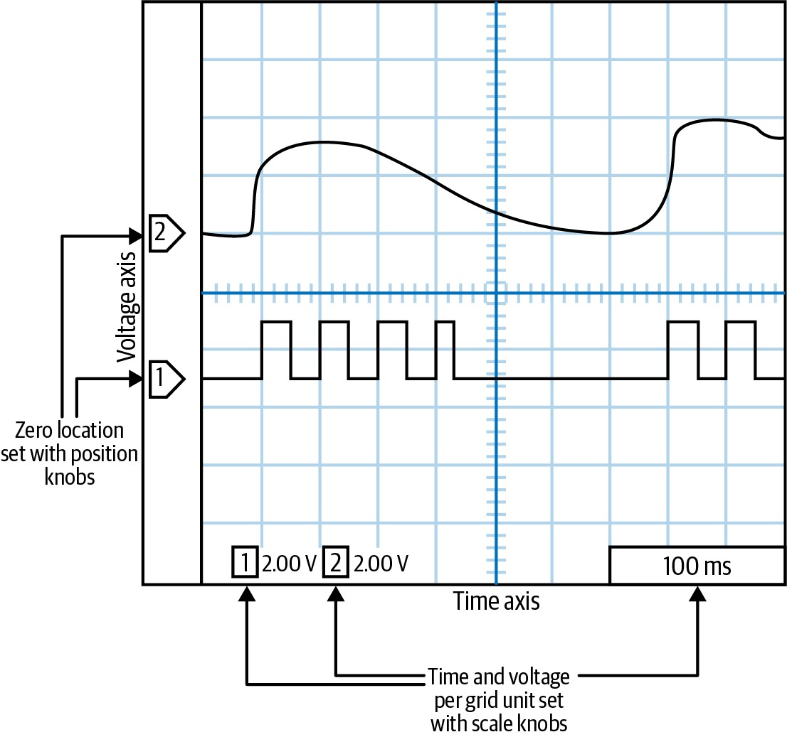
图 3-13 — 简化的示波器屏幕截图
在示波器的界面上，应该有一个旋钮来改变时间刻度。向右旋转，每个水平格从（比如说）1秒变为0.5秒（然后进一步降到毫秒或微秒范围）。这控制整个屏幕的时间刻度。调试时，目标是从能显示你要观察内容的最大可能时基开始。 如果你放得太大，你会看到奇怪的现象，因为那些本应是数字的信号会展现出它们真实（而奇怪）的模拟特性。 设置好时基后，你需要设置电压轴的比例。可能会有一个旋钮控制所有通道（或探头），这时你需要用其他方式切换通道，或者可能每个通道各有一个旋钮。不管怎样，当你向右旋转时，每个垂直格会放大（5 V变成2 V，然后到毫伏级别）。 如果你不确定，把时间刻度设为大约100 ms/格，电压精度设为大约2 V/格。如果需要，之后可以从那里放大（或缩小）。 还有一个不同的旋钮用来设置每个通道在屏幕上的位置，也就是说，它的零线在哪里。图3-13在屏幕左侧展示了每个通道的零线。可能每个通道各有一个旋钮，也可能用一个旋钮在多个通道间复用。让各通道之间稍微有些偏移，这样你就能看到每个通道。（你可以关掉不需要的通道——大概是用一个按钮。） 接下来，找一个旋钮来设置时间刻度的零点。这会让一条竖线在屏幕上左右移动。把它设在靠近中间的位置。或者，如果你要查看事件发生之后的信息，可以把它设在屏幕左侧；如果你想了解事件发生之前的情况，就设在右侧。 此时，你可能可以打开你的系统，看到一条线在扭动。它可能一晃而过，快得你都不明白发生了什么，但这是一个开始。如果没有反应，寻找标有Run/Stop的按钮。你需要示波器处于Run（运行）模式。Stop（停止）模式会冻结显示屏在某个时间点上，给你机会思考自己所发现的东西。Run/Stop附近可能有一个标有Single（单次）的按钮，它等待一次触发然后将系统置于Stop模式。也可能有一个Auto（自动）按钮，让系统连续触发。 如果有一个Auto按钮，按之前要非常小心。要确认这个名称是指auto trigger（自动触发）还是auto set（自动设置）。前者很有用，但后者会尝试自动为你配置示波器。我发现它往往会把配置重置成完全随机的样子。 要设置触发，寻找触发旋钮。这会显示一条水平线来表示触发电平的位置。它是依赖通道的，但与其他依赖通道的旋钮不同，你通常不能为每个通道设置一个触发。相反，它需要额外的配置，通常通过屏幕菜单和按钮操作来完成。 你需要让触发所在的通道正好在有趣事件的开始（或结束）处发生变化。你需要选择触发是在上升沿还是下降沿激活。你还需要选择示波器触发的频率。如果你想看到它第一次变化，设置一个长的超时时间。如果你想看到它最后一次变化，设置一个短的。 还有一些其他需要注意的事项。除非你知道自己在做什么，否则不要把示波器设在AC模式。另外，探头可能会把信号放大或缩小到屏幕上显示的10倍（或1/10）。这取决于探头，所以如果你差了一个数量级，就找一下10x标记并切换它的状态。 如果你按照我的说明（以及示波器手册）设置好了示波器，但仍然不能按你期望的方式工作，就找一个更有经验的人来帮你。示波器是功能强大且有用的工具，但用好它需要大量练习。如果起步时有点令人沮丧，不要气馁。
测试硬件（和软件）
我强烈建议你做好准备，随时可以拿出工具箱、DMM和示波器，但如果你还没准备好独自操作，完全可以留给硬件工程师来做。作为一个软件人员，更重要的是尽可能推进软件的建设，以有利于轻松调试的方式来测试硬件。 嵌入式系统通常有三种测试。第一种是上电自检（POST），每次系统启动时都运行，甚至在代码发布后也是如此。这个测试验证所有硬件组件都处于正常工作状态，以及安全运行系统所需的一切。POST测试得越多，启动时间就越长，所以这里有一个可能影响客户的权衡。一旦POST完成，系统就可以供客户使用了。 理想情况下，所有在启动时打印的POST调试信息都应该在之后可以访问。无论是软件版本字符串还是连接的传感器类型，总会有你需要这些信息而又不想重启系统的时候。 第二种测试是单元测试。单元测试应该在每次软件发布前运行，但它们可能不适合在每次启动时运行，也许是因为执行时间太长、会将系统恢复到出厂默认值、或是在屏幕上显示不好看的测试图案。这些测试验证软件和硬件是否按预期协同工作。 "单元测试"这个词对不同的人意味着不同的东西。对我来说，单元测试是自动化测试代码，用来验证一个源代码单元是否准备就绪。有些开发者希望测试覆盖代码的所有可能路径。这可能导致单元测试套件庞大而笨重，这正是用来反对在嵌入式系统中进行单元测试的论据。我所说的单元测试旨在测试基本功能和最可能出现的边界情况。这个过程让我把测试融入开发中，并且一直保留它，即使在产品发布之后。 搞清楚你的行业（或管理层）对你的单元测试有什么期望。如果他们的意思是测试要覆盖所有软件路径，确保你（和他们）理解这将需要多少工作和代码。 有些单元测试可能独立于系统硬件（也就是说，如果你按照第2章的建议使用沙箱来验证算法的话）。对于那些不是独立于硬件的单元测试，我鼓励你尽可能把它们保留在生产代码中，使得在现场可以通过某种特殊条件来访问它们（例如，"在系统启动时按住这两个按钮并做斗鸡眼"）。这不仅能让你的质量部门使用这些测试，你还可能发现，在现场使用单元测试作为一线检查能告诉你系统的硬件是否表现异常。 第三种也是最后一种测试是你在bring-up（启动调试）期间创建的测试，通常是因为某个子系统没有按预期工作。这些有时是一次性检查，会被更全面的测试取代，或被添加到单元测试中。临时的bring-up代码是可以接受的。这整个过程的目标不是写经典的源代码，而是构建系统。一旦你把这样的代码检入到版本控制系统中，删除它也没关系，因为如果你意识到还需要这个测试，随时可以从版本控制中恢复文件。
构建测试
如前所述，控制外设的代码（以及相关的测试）通常是在原理图完成期间编写的。好消息是你刚刚花时间研读了datasheet，所以你对如何实现代码有很好的想法。坏消息是，在等待板子到货的期间，你可能要为六个外设写完驱动，然后才能将软件与硬件集成。 在第2章中，我们有一个系统通过SPI通信协议与flash存储设备通信（其部分原理图在图3-14中重现）。我们需要测试什么，需要什么工具来验证结果？ • I/O线受软件控制（用DMM进行外部验证）。 • SPI可以发送和接收字节（用逻辑分析仪进行外部验证）。 • Flash可以被读写（内部验证；使用调试子系统输出结果）。
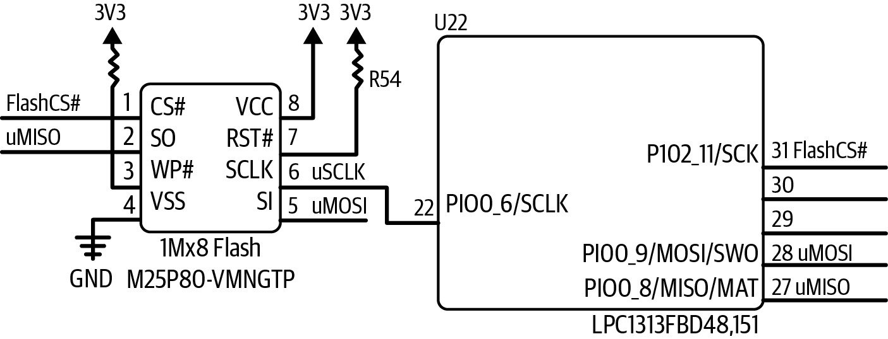
图 3-14 — Flash存储器原理图片段
为了让bring-up变得容易，你需要能够执行上述每一项。你可能会选择先运行全功能的flash测试。如果通过了，你就知道另外两项也通过了。然而，如果没通过，你就需要另外两项测试可用于必要的调试。 其他章节涵盖了I/O线的控制（第4章）和SPI的更多内容（第7章），所以现在让我们专注于我们可以编写的用于测试flash存储器的测试。flash的工作原理不是关键，但你可以通过阅读Macronix MX25V8035 flash存储器datasheet来测试自己读datasheet的能力（在Google、DigiKey或供应商网站上搜索部件号）。
Flash测试示例
Flash存储器是一种非易失性存储器（所以断电后数据不会丢失）。其他类型的非易失性存储器包括ROM（只读存储器）和电可擦除可编程只读存储器（EEPROM）。 易失性存储器在断电后不保留其值。易失性存储器有不同种类，但它们都是某种类型的RAM。 与EEPROM类似，flash可以被擦除和写入。然而，大多数EEPROM允许你一次擦除和写入一个字节。对于flash，你可能可以一次写入一个字节，但你必须擦除整个扇区才能这么做。扇区大小取决于flash（通常flash越大，每个扇区越大）。对于我们测试的元件，一个扇区是4千字节（即4096字节），整个芯片包含8 Mb（1 MB或256个扇区）。flash通常比EEPROM空间更大，也更省电。然而，EEPROM有更小的容量，所以它们仍然有用。 当我们编写bring-up测试时，flash芯片中不需要保留任何内容。对于POST，我们确实不应该修改flash，因为系统可能正在使用它（用于存储版本和图形数据）。对于单元测试，我们希望在测试后保持原样，但我们可能可以设定一些约束条件。 测试通常接受三个参数：目标flash地址（这样测试可以在一个未使用或非关键的扇区中运行）、一个指向内存的指针、以及内存长度。内存长度是flash测试将存储到RAM的数据量。如果内存与扇区大小相同，flash中的数据就不会丢失。以下原型展示了三种类型的测试：一个运行其他测试的伞形测试（返回它遇到的错误数量）、一个尝试从flash读取的测试（返回实际读取的字节数）、以及一个尝试向flash写入的测试（返回写入的字节数）：
// C代码（保留英文，仅翻译注释）
int FlashTest(uint32_t address, uint8_t *memory, uint16_t memLength); uint16_t FlashRead(uint32_t addr, uint8_t *data, uint16_t dataLen); uint16_t FlashWrite(uint32_t addr, uint8_t *data, uint16_t dataLen); 我们将在bring-up期间广泛使用FlashTest，然后将其放入单元测试中，在情况有变或发布前根据需要启用它。我们不希望这个测试作为POST的一部分。flash在经过一定次数的擦除和写入后就会磨损（通常是100,000次；这个信息在datasheet中）。此外，这些测试中至少有两个有可能破坏我们的数据。 而且，我们不需要在启动时做这个测试。如果处理器能够与flash通信，那么合理地相信flash是正常工作的。（你可以通过在flash中放置一个包含已知键值、版本和/或校验和的头部来检查基本通信。） 访问这个flash部件有两种方式：单个字节和多字节块。以后运行真实代码时，你可能想使用更快的块访问方式。在初始bring-up和测试期间，你可能想从更简单的字节方法开始，为你的驱动打好坚实基础。
测试1：读取现有数据
测试你能从flash读取数据，实际上验证了I/O线已配置为用作SPI端口、SPI端口配置正确、以及你理解了flash命令协议的基础知识。
对于这个测试，我们将尽可能多地从扇区读出数据，以便稍后能写回去。以下是FlashTest的开始部分：
// C代码（保留英文，注释翻译）
// 测试1：读取一个块中的现有数据，以确认读取是可行的
dataLen = FlashRead(startAddress, memory, memLength); if (dataLen != memLength) {
// 读取的数据少于期望，记录错误
Log(LogUnitTest, LogLevelError, "Flash test: truncation on byte read"); memLength = dataLen; error++; } 请注意，这里没有对数据进行验证，因为我们不知道这个函数是否在空flash芯片上运行。如果你在写POST，你可以做这个读取然后检查数据是否有效（然后停止测试，因为这对于上电检查已经足够了）。
测试2：字节访问
下一个测试从擦除扇区中的数据开始。然后向flash填充数据，一次写入一个字节。我们希望写入一些会变化的值，以便确认命令生效。我喜欢写入一个基于地址的偏移量。（这个偏移量告诉我，我没有意外地读回了地址值。） FlashEraseSector(startAddress);
// 想要放入一个递增的值，但不希望是地址值
addValue = 0x55; for (i=0; i< memLength; i++) { value = i + addValue; dataLen = FlashWrite(startAddress + i, &value, 1); if (dataLen != 1) { Log (LogUnitTest, LogLevelError, "Flash test: byte write error."); error++; } } 要完成这个检查，你需要逐字节读回数据，并验证每个地址的值是否如预期（地址 + addValue）。
测试3：块访问
现在flash中包含了我们新写入的数据，通过把原始数据放回去来确认块访问是否正常工作。这意味着需要再次擦除扇区： FlashEraseSector(startAddress); dataLen = FlashWrite(startAddress, memory, memLength); if (dataLen != memLength) { LogWithNum(LogUnitTest, LogLevelError, "Flash test: block write error, len ", dataLen); error++; } 最后，用另一个逐字节读取来验证这些数据。从测试2我们知道逐字节读取是可行的。如果结果正确，那么我们就知道块写入从这个测试来看是可行的，块读取从测试1来看是可行的。错误数量返回给上层验证代码。 这个测试检验的是flash驱动软件。它不检查flash是否有粘滞位（即应该改变但从来不改变的位）。制造测试可以确认所有位都能改变，但大多数flash在到达你手中之前已经以这种方式验证过了。
测试总结
如果板子通过了这三项测试，你就可以确信flash硬件和软件都能正常工作，满足了Bring-up测试和单元测试的需求。
对于大多数形式的存储器，我们在这里看到的模式是一个好的起点：
1. 读取原始数据。 2. 写入一些变化但可公式化计算的数据。 3. 验证数据。 4. 写回原始数据。 5. 验证原始数据。 不过，还有许多其他类型的外设——比我能在这里覆盖的更多。虽然自动化测试是最好的，但有些测试需要外部验证，例如LCD显示一组颜色和线条图案来验证其驱动。有些测试需要伪造的外部输入来检查传感元件。 对于你的每一个外设和软件子系统，尝试找出哪些测试能让你确信它可靠地按预期工作。这听起来不难，但实际可能很困难。设计好的测试是能让你的软件变得卓越的事情之一。
命令与响应
假设你采纳了前一节的建议，为硬件的每个部分都创建了测试函数。在bring-up期间，你制作了一个特殊镜像，在每次上电时执行每个测试。如果其中一个失败了，你和硬件工程师可能想一遍又一遍地只运行那个测试。所以你重新编译并重新加载。然后你想对另一个测试做同样的事。所以你再次重新编译和重新加载。然后再对另一个测试又这样做。这个"编译-加载"循环越来越让人厌烦。如果能向你的嵌入式系统发送命令，让它根据需要运行测试，不是更简单吗？ 嵌入式系统通常没有计算机（甚至智能手机）上那种丰富的用户界面体验。很多嵌入式系统通过命令行来控制。即使那些有屏幕的系统，通常也使用命令行界面进行调试。本节的第一部分描述了如何在C语言中使用函数指针构建命令处理跳转表来发送命令。这个巧妙的问题和解决方案给了我一个展示标准命令模式的机会，无论你使用什么语言，这都是一个值得了解的有用模式。
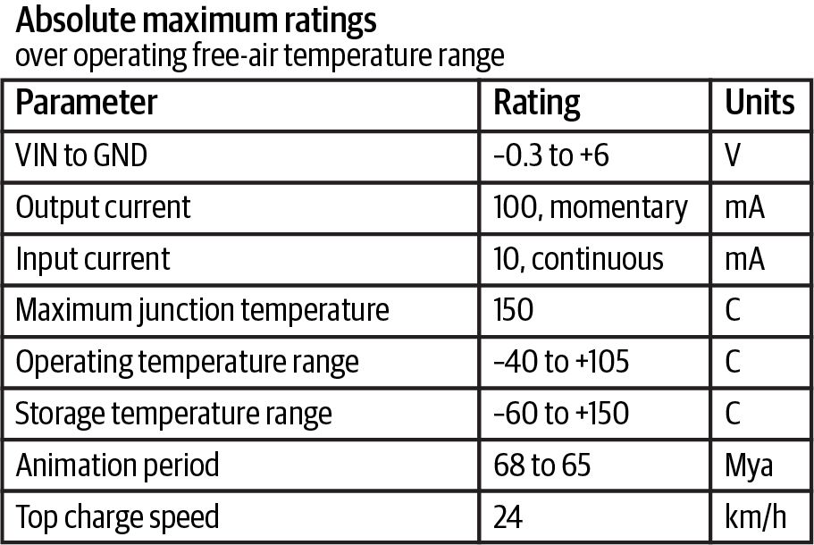
图 3-15 — 命令处理器的目标
一旦你读入了一些数据，代码就需要确定调用哪个函数。带有一个命令表的小型解释器会让你周围的人的生活更轻松。通过将接口与实际测试代码分离，你将能够更容易地朝着未预见的方向扩展它。
创建命令
让我们从你想实现的一小部分命令开始：
代码版本
输出版本信息
测试flash
运行flash单元测试，完成后打印错误数量
闪烁LED
设置一个LED以给定频率闪烁
帮助
列出可用命令及一行描述
一旦你实现了一些命令，在开发过程中添加命令应该相当容易。 我将展示如何用C语言实现它，因为这可能是实现它的最令人畏惧的方式。C++和Java等面向对象语言提供了使用对象来实现此功能的更友好的方式。然而，C方式通常更小且通常更快，所以在选择如何实现此模式时请考虑这一点。对于不熟悉C语言函数指针的读者，侧边栏"函数指针没那么可怕"（第78页）提供了一个入门介绍。
每一个我们可以调用的命令都由一个名称、一个要调用的函数和一个帮助字符串组成：
typedef void(*functionPointerType)(void); struct commandStruct { char const *name; functionPointerType execute; char const *help; };
这些结构体的数组将提供我们的命令列表：
const struct commandStruct commands[] = { {"ver", CmdVersion, "Display firmware version"}, {"flashTest", CmdFlashTest, "Runs the flash unit test, prints number of errors upon completion"}, {"blinkLed", CmdBlinkLed, "Sets the LED to blink at a desired rate (parameter: frequency (Hz))"}, {"help", CmdHelp, "Prints out help messages"}, {"",0,""} // 表结束标记。必须放在最后！！！ }; 命令执行函数CmdVersion、CmdFlashTest、CmdBlinkLed和CmdHelp在别处实现。需要参数的命令必须与解析器协作，从字符流中获取参数。这不仅简化了这段代码，还提供了更大的灵活性，允许每个命令自行设定使用规则，如参数的数量和类型。 请注意列表中的help命令是一个特殊命令，它打印表中所有项的名称和帮助字符串。
函数指针没那么可怕
你能想象这样一种情况吗：直到程序已经在运行了，你才知道要运行哪个函数？例如，假设你想对来自传感器的数据运行几个信号处理算法中的一个。你可以从一个由变量控制的switch语句开始： switch (algorithm) { case kFIRFilter: return fir(data, dataLen); case kIIRFilter: return iir(data, dataLen); } 现在，当你想改变算法时，你发送一个命令或按一个按钮来使algorithm变量改变。如果数据被持续处理，即使你没有改变算法，系统仍然需要执行switch语句。 在面向对象语言中，你可以使用对接口的引用。每个算法对象会实现一个同名函数（对于这个信号处理示例，我们称它为filter）。然后，当算法需要改变时，调用者对象就会改变。根据具体语言，接口实现可以通过关键字或继承来指示。 C语言没有这些特性（而在C++中使用继承可能因为编译器约束在你的系统中被禁止）。因此，我们来到函数指针，它可以做同样的事。 要声明一个函数指针，你需要一个将要放入其中的函数的原型。对于我们的switch语句，那应该是一个接受数据指针和数据长度且不返回任何内容的函数。不过，它可以通过修改其第一个参数来返回结果。其中一个函数的原型看起来像这样： void fir(uint16_t* data, uint16_t dataLen);
现在去掉函数名，替换为一个星号和一个用括号括起来的通用名称：
void (*filter)(uint16_t* data, uint16_t dataLen); 与其改变你的算法变量并调用switch语句来选择函数，不如只在需要时改变算法并调用函数指针。有两种方法可以做到这一点，隐式方法（下面左侧）和显式方法（右侧）。它们是等价的，只是语法形式不同： filter = fir; // 或者 filter = &fir; filter(data, dataLen); // 或者 (*filter)(data, dataLen); 一旦你对函数指针的概念感到得心应手，当代码需要适应其运行环境时，它们就会成为一个强大的工具。函数指针的一些常见用途包括本章中描述的命令结构、用于指示事件完成的回调函数，以及将按钮按下映射到上下文相关操作。有一点需要注意：过度滥用函数指针可能会导致处理器运行变慢。一些处理器会尝试预测代码的走向，并在执行前加载相应的指令。函数指针会抑制分支预测，因为处理器无法猜测你在调用之后会跳转到哪里。另一方面，如果你想将代码优化到这个程度，也许可以直接跳到第11章。 不过，其他动态选择函数调用的方法同样也会中断分支预测（比如我们一开始使用的switch语句）。除非你已经到了手工调优汇编代码的阶段，否则通常不值得为函数指针这种强大功能所带来的轻微性能下降而担忧。
调用命令
当命令行上的客户端通过发送字符串来指示要运行哪个命令时，你需要选择相应的命令并执行它。为此，你需要遍历表，查找匹配的字符串。一旦找到匹配项，就调用函数指针来执行对应的函数。 与上一节相比，这一部分似乎简单得有些过头。而这正是目标所在。嵌入式系统往往非常复杂，考虑到其严格的约束条件和隐藏的依赖关系，有时甚至复杂得可怕。本设计模式（以及许多其它模式）的目标就是隔离复杂性。你无法消除复杂性；一个什么都不做的系统并不复杂，但它也没什么用处。在设置表格和使用它的解析代码中仍然存在不少的复杂性，但这些细节可以被限制在它们自己的空间内。
命令模式（Command Pattern）
我们一直在讨论的，实际上是一个正式的经典设计模式。我所描述的命令处理器是针对特定问题的战术性解决方案，而命令模式则是指导它以及类似设计的策略。 该模式的总体目标是将命令处理与实际要执行的操作解耦。命令模式展示了一个用于执行操作的接口。每当你遇到系统中某一部分需要向另一部分发出请求，而中间层不需要知道这些请求的内容时，就可以考虑使用命令模式。如图3-16所示，它包含四个组成部分：
客户端（Client）
一张将接收者映射到命令的表。客户端创建具体的命令对象，并建立接收者与命令对象之间的关联。客户端可以在初始化时运行（如我们示例中通过创建数组的方式），也可以动态地创建关联。
调用者（Invoker）
解析代码，负责确定命令何时需要运行并执行它。它不关心接收者的任何信息，对每个命令都一视同仁。
命令（Command）
客户端表中的一个条目，是用于执行操作的接口。在C++中是类，在Java中是接口，在C中则是带有函数指针的结构体。命令接口的实例化称为具体命令（concrete command）。
接收者（Receiver）
知道如何服务请求的函数。运行接收者代码是发送命令的人（或其它设备）的最终目标。
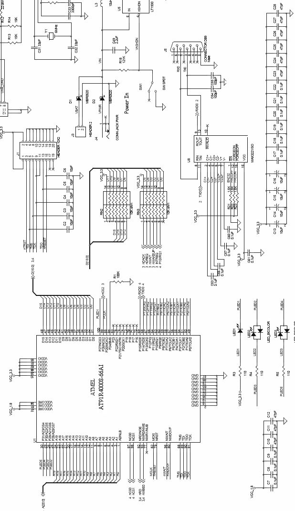
图 3-16 — 命令处理器的工作方式
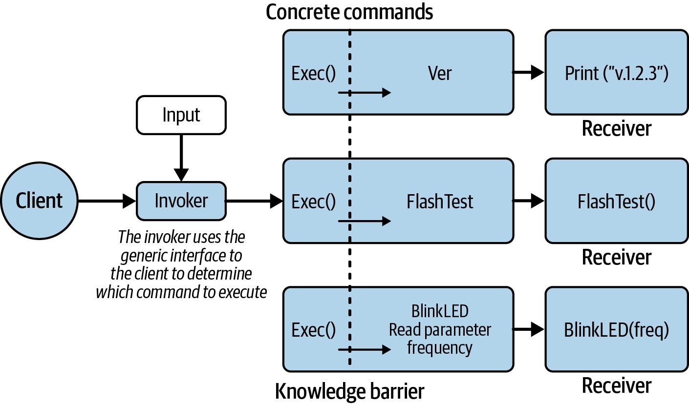
图 3-17 — 命令模式与知识壁垒
可以将客户端视为通过将所有命令伪装成相同的样子来保护系统的秘密。这使命令与你的代码解耦，使得后续扩展变得更加容易（你将来确实会需要这样做）。
处理错误
代码的长久生命力令我震惊。虽然有时我们似乎只是在用不同的方式重写同样的旧东西，但有一天你可能会发现，你在十多年前的初创公司写的一段代码，正在被一家《财富》500强公司使用。一旦代码运行得足够好，为什么还要去修复底层的代码呢？ 更令人不安的是，你得知道自己的代码终有一天会出问题。错误总会发生，要么来自你编写的内容，要么来自环境中的意外情况。处理错误有两种方式。第一种，系统可以进入一种优雅降级（graceful degradation）的状态，软件尽其所能地继续运行。第二种，系统可以立即大声地宣告失败。长期运行的传感器类系统需要前一种方式，而医疗类系统则需要后一种方式。无论哪种方式，系统都应该安全地失败（fail safely）。 但如何实现这两种方式呢？更重要的是，应该根据什么标准来决定哪些子系统采用哪种错误处理方法？具体怎么做取决于你的产品；我的目标是让你在设计阶段就开始思考错误处理的问题。
一致的方法论
函数应该尽其所能地处理错误。例如，如果一个变量可能超出范围，就应该修正该范围并适当地记录错误。函数可以返回错误，让调用者来处理问题。调用者应该检查并处理错误，这可能意味着在多层应用程序中将错误进一步向上游传递。在许多情况下，如果一个错误不值得检查，那它也就不值得返回。另一方面，有些情况下你可能希望返回一个仅在测试中使用的诊断代码。可以在注释中说明，返回的错误代码不用于正常使用，或者只应在assert()调用中使用。 assert()在嵌入式系统中并不总是被实现，但以适合系统的方式来实现它并不复杂。它可能是在调试器控制台打印的一条消息，是向系统控制台或日志的输出，是一条断点指令（如BKPT），甚至是一根在错误条件下翻转的I/O线或LED灯。打印操作会改变嵌入式系统的时序，因此将错误通信的函数分离出来通常更有好处，以便允许其它输出方式（例如LED灯）。 断点指令告诉处理器，如果调试器已连接就停止运行。程序化断点可以被编译进你的代码中。它通常是一个汇编函数，常常隐藏在一个宏后面： #define BKPT() __asm__(“BKPT”) #define BKPT() __asm__(“bkpt #0”) #define BKPT() __asm__(“break”) 这些断点会被编译到你的代码中（它们不会占用你有限的硬件断点预算！）。这可以让你更容易地单步调试代码，特别是当你只在特定条件下才遇到错误时。 应用程序或系统的错误返回码应该在整个代码库中标准化。可以创建一个单一的高层errorCodes.h文件（或类似的文件），以枚举格式提供一致的错误代码。一些建议的错误代码包括： - 无错误（应始终为0） - 未知错误（或无法识别的错误） - 参数错误 - 索引错误（指针超出范围或为空） - 未初始化的变量或子系统 - 灾难性故障（这可能导致处理器复位，除非处于开发模式，在开发模式下则可能导致断点或自旋循环） 应该有最小数量的错误代码（通用错误），以便应用程序能够解释它们。虽然你可以使用像UART_FAILED_TO_INIT_SECOND_PARAM_TOO_HIGH这样的错误码，但泛化处理会使错误处理更容易。如果某个子系统中出现了PARAMETER_BAD错误，你就有了一个很好的起点去查找问题。本质上，通过保持简单，你确保将重要信息（存在bug）交到开发者手中，而进一步的调试可以深入挖掘出错的位置和原因。
错误检查流程
如果错误没有被处理，返回错误对任何人都没有好处。我们太经常只编写正常情况下的代码，而忽略了其它路径。我们是在寄希望于错误永远不会发生吗？这太天真了。 另一方面，当函数应该跳转到末尾并返回自己的错误，将问题向上冒泡到更高层时，逐个处理每个错误就变得相当繁琐。虽然有些人使用嵌套的if/else语句，但我通常更倾向于让代码贯穿整个函数，尽量使错误处理足够冗余，以便在正常路径流程中通常可以忽略： error = FunctionSay(); if (error == NO_ERROR) { error = FunctionHello(); } if (error == NO_ERROR) { error = FunctionWorld(); } if (error != NO_ERROR) {
// 处理错误状态
} return error; 这允许你一次调用多个函数，在末尾检查错误，而不是在每次调用时都检查。
错误处理库
错误处理库是另一种选择：
ErrorSet(&globalErrorCode, error);
或者：
ErrorSet(&globalErrorCode, FunctionFoo()); 如果该函数没有失败就返回，ErrorSet函数就不会覆盖先前的错误状态。和之前一样，这允许你一次调用多个函数，在末尾检查错误，而不是在每次调用时都检查。 在这样的错误处理库中，应该有四个函数，根据应用程序的实际需要来实现和使用：ErrorSet、ErrorGet、ErrorPrint和ErrorClear。该库应该主要为调试和测试而设计，不过即使开发完成后，错误处理机制也应该保留。例如，ErrorPrint可能会从通过串口写出日志信息，变为一个仅翻转I/O线的小函数。这不是给最终用户处理的错误；它是为那些面对不能正常工作的生产单元的开发者准备的。 如果你觉得这听起来有些熟悉，那可能是因为这正是标准C/C++库所做的事情。如果你的文件用fopen打开失败，它不仅返回NULL来告诉你发生了错误，fopen还会将错误代码放入errno中，提供关于出错原因的更多信息。即使对于大多数嵌入式系统，你也可以使用perror和strerror来获取错误代码的文本描述。当然，和我上面的版本一样，如果你不清除errno，你可能看到的是旧的错误。
调试时序错误
在调试硬件/软件交互（或任何对时间敏感的软件）时，串行输出（如日志或printf）可能会改变代码的时序。在许多情况下，时序问题会根据你的输出语句和/或断点的位置而出现（或消失）。当你的工具干扰了问题本身时，调试就变得困难了。 使用错误库（或第2章中描述的日志库）的一个优势在于，你不必输出数据；你可以将数据存储在本地RAM中，这通常是一个快得多的方案。事实上，如果你在时序方面遇到问题，可以考虑建立一个小的缓冲区（4–16字节，取决于你的RAM可用量），用于存放来自软件的信号（一到两字节）。在你的代码中，在感兴趣的关键触发点（例如ASSERT或ErrorSet处）填充缓冲区。当代码退出时间敏感区域后，你可以转储此缓冲区。如果你最关心的是最后一个错误，可以使用环形缓冲区来持续捕获最近发生的事件（环形缓冲区在第7章中有更详细的讨论）。 另外，如果你对电路板设计有发言权，我强烈建议争取在电路板上预留可用的处理器备用I/O口，并通过排针方便地引出。它们在调试时会非常有用（特别是对于棘手的时序问题，串行输出会破坏时序），在测试中显示系统状态以及在剖析处理器周期时也同样有用。这些称为测试点（test points）。最好的电子工程师会在他们绘制原理图时问你你需要多少个。关于测试点的使用，第11章将有更多介绍。
进一步阅读
如果你想了解有关安全处理硬件、阅读原理图和焊接的更多知识，我建议阅读Charles Platt的《Make: Electronics》（O'Reilly）最新版。这本循序渐进的入门书读起来很轻松，当然如果手边有元件跟着动手做效果更佳。 关于从原型到出货产品的更多信息，我推荐Alan Cohen的《Prototype to Product: A Practical Guide for Getting to Market》（O'Reilly）。它涵盖了从餐巾纸上的草图到产品所需的所有步骤。 沿着同样的思路，但更专注于个人职业发展的，是Camille Fournier的《The Manager's Path: A Guide for Tech Leaders Navigating Growth & Change》（O'Reilly）。即使你不是管理者，这本书也讨论了管理者需要了解的事情，这会让你深入了解如何展示你的工作。这本书我通常读几章就放在书架上，直到我获得晋升后再读接下来的几章。 Adafruit和SparkFun是令人惊叹的资源，充满了结合硬件和软件的有详尽文档的教程。更棒的是，它们丰富的GitHub仓库中包含了高质量的代码。如果它们有针对与你所用器件类似的代码，那它们的代码可能是让你的驱动程序成功运行的关键。
面试问题：谈谈失败
告诉我一个你参与过的成功项目。然后，告诉我一个你参与过的不那么成功的项目。发生了什么？你是如何应对的？（感谢Kristin Anderson提供这个问题。） 这个问题的目的并不在于评判求职者过去的成功与失败。问题之所以从这里开始，是因为导致成功（或失败）的过程依赖于知识、信息和沟通。通过谈论成功或失败，求职者会展现出他们如何从可用信息中学习，他们如何寻求信息，以及他们如何将重要信息传达给团队中的其他人。如果他们能理解大局并分析项目的进展，他们就更有可能成为团队的宝贵资产。 问题的成功部分听起来很有趣，特别是当面试者对自己的项目感到兴奋和充满热情时。我想听听他们在使项目成功中所扮演的角色，以及他们所采用的过程。然而，和许多技术性问题一样，问题的前半部分实际上是为了引出问题的后半部分：失败。 他们是在投入项目之前就理解了所有需求，还是市场营销团队设定的需求与工程师制定的计划之间可能存在沟通上的鸿沟？求职者是否考虑了所有任务，甚至考虑了墨菲定律，然后再制定进度表并留出一些风险缓冲时间？ 他们是否提出了与他们面临的任何风险或问题相关的任何事情，以及他们考虑过的任何缓解策略？这些术语中有一些是项目管理的术语，我并不真的期望工程师们能使用所有正确的流行词。但我确实期望他们能超越技术层面的讨论，能够告诉我成功项目中的其它因素。 通常，在谈论成功项目时，求职者会说他们理解了需求，知道如何开发正确的项目并让人们满意。这足以让我们继续下一个问题。 然后，当我问出了什么问题时，我真正想听的是求职者如何评估影响项目成功的因素，以及他们是否能告诉我他们认为项目失败的原因（沟通不畅、缺乏明确的目标、缺乏明确的需求、没有管理层的支持等）。这个问题没有正确或错误的答案；我感兴趣的是他们如何分析项目来告诉我出了什么问题。（不过，如果他们只是一味地指责周围的人，那我确实会感到担忧。） 对于那些想不出一个不成功项目的面试者，我感到失望，因为没有哪个项目是完美进行的，所以我倾向于认为他们没有关注项目的整体。理解的不仅仅是他们需要做的技术工作，这会让一名工程师成为一名更优秀的工程师。